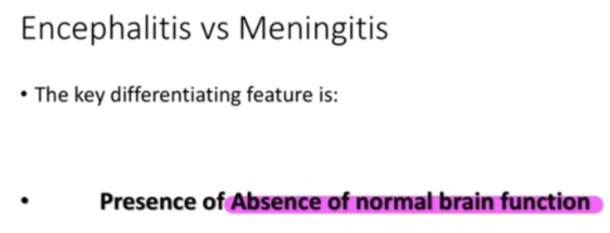
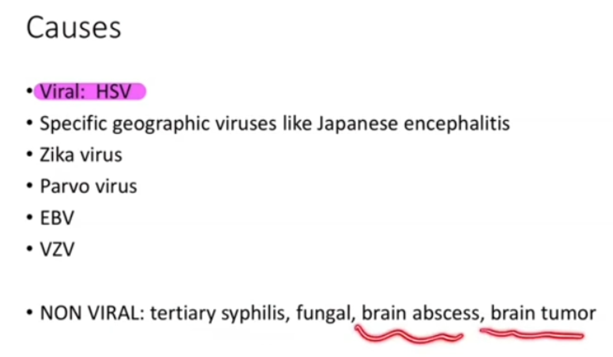
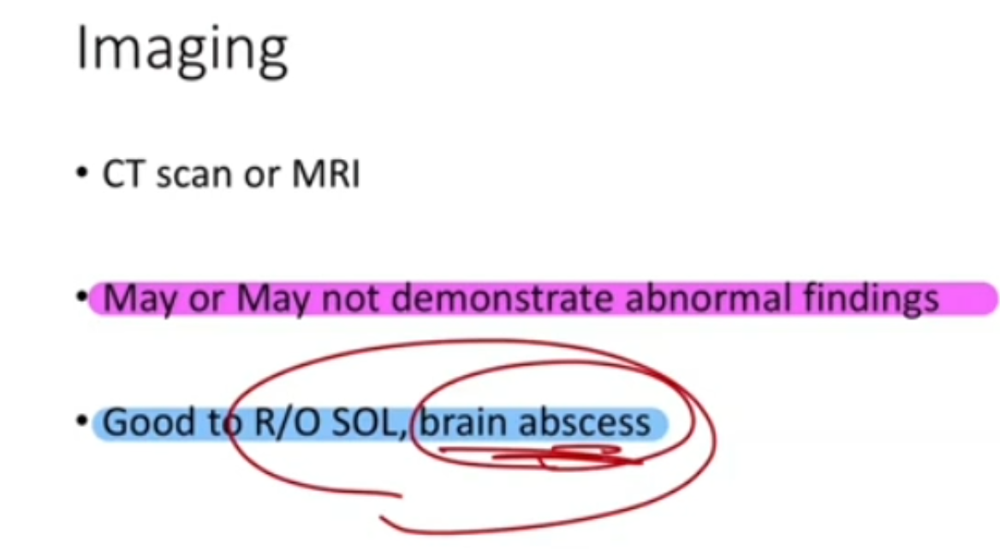
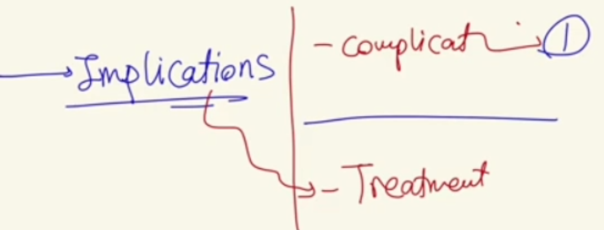
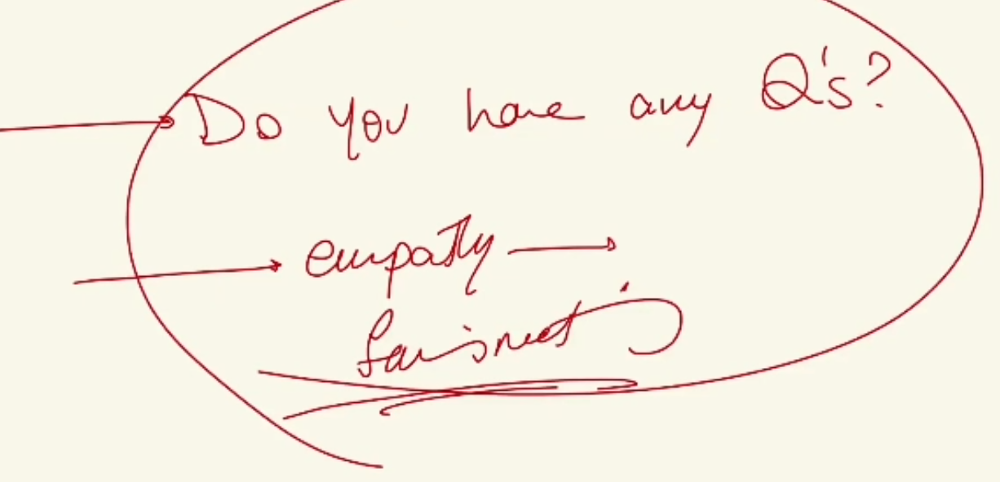

Viral Encephalitis (Delirium Counselling with a Distressed Parent)
Source: Dr. Amir workshop — Med workshop 2 - 2026 / CLASS 2 NEUROLOGY (Aug 2026 drop) · Specialty: neurology
Overview
This case first appeared in 2019 and again in 2022. The confused patient (a son) cannot give a history because he is post-ictal and confused, so the task is to communicate with the distressed father: explain the examination and investigations, give the diagnosis, and discuss implications and management. It carries a strong communication-skills component. A normal brain CT excludes brain abscess and tumour; the absence of neck stiffness argues against meningitis.
Meningitis versus Encephalitis
Meningitis is infection/inflammation of the coverings (meninges) of the brain; bacterial meningitis is the most feared and most common serious form. It typically presents with fever, neck stiffness, headache, photophobia, nausea and vomiting, with generally normal cerebral function.
Encephalitis is infection of the brain tissue itself; most cases are viral. The hallmark is an acute change in mental status – confusion, drowsiness and possible seizures – with abnormal brain function (abnormal behaviour, personality change, speech and movement disorder, seizures, focal neurological deficits). Meningeal irritation signs (neck stiffness, photophobia) are usually absent.
In Australia the important viral causes are Japanese encephalitis (mosquito-borne, notably Victoria and Queensland) and herpes simplex, which tops the list. Non-viral mimics include neurosyphilis, brain tumour and brain abscess.
Investigations
Brain CT/MRI: imaging is needed because the patient has a seizure and neurological deficit, to exclude structural problems such as tumour or abscess. In this case the CT is normal.
Lumbar puncture and CSF: differentiates meningitis from encephalitis. In viral encephalitis the CSF white cell count is raised with a lymphocyte predominance, mildly elevated protein and normal glucose. In bacterial meningitis neutrophils predominate with a more significant protein rise.
| Parameter | Viral encephalitis | Bacterial meningitis |
|---|---|---|
| Dominant WBC | Lymphocytes | Neutrophils |
| Protein | Mildly elevated | Markedly elevated |
| Glucose | Normal | Low |
CSF PCR: send CSF for viral PCR (HSV, VZV, enterovirus) to confirm the organism.
Bloods: raised peripheral WBC and elevated inflammatory markers (ESR and CRP) support systemic infection.
Communicating with the Parent
Sit down, introduce yourself, be patient, and confirm consent to discuss the son’s condition. Use an open-ended question (what has happened so far). The father typically reports: since yesterday headaches and mild fever, then today sudden strange behaviour and inappropriate speech, followed by a fit that prompted an ambulance call.
Acknowledge that this is distressing, reassure that the team will provide the best care, and ask permission before explaining. Explain the examination findings first (mild fever, no neck pain on flexion, normal fundoscopy) then the investigations.
Diagnosis Explanation
Diagnosis: delirium (a sudden change in behaviour and mental state causing confusion, disorientation, memory problems and inappropriate speech) caused by viral encephalitis, an infection of the brain by a virus – most commonly herpes, though it could be Japanese encephalitis pending confirmation.
Reasons: headache, mild fever, and importantly abnormal behaviour, confusion and a seizure; no neck stiffness (which would suggest meningitis); and investigations confirming a brain infection with a lymphocyte predominance pointing to a viral cause.
Differential Diagnosis
Encephalitis / infective causes: meningitis, brain abscess, brain tumour, other viral causes (Japanese encephalitis, VZV encephalitis).
Delirium (sudden change in behaviour + seizure) differentials:
- Drug-induced psychosis / overdose (can cause seizures)
- Intracranial haemorrhage (ICH, subarachnoid haemorrhage)
- Brain tumour or abscess
- Cardiac events / pulmonary embolism
- Severe drug or medication withdrawal (can cause seizures)
- Electrolyte disturbance and blood-sugar abnormalities (high or low)
Implications, Complications and Management
Implications: the infection can be life-threatening, so treatment is urgent. Around 61% of patients recover fully, but some develop lasting complications:
- Cognitive: memory, language and speech problems
- Emotional/behavioural: low mood, anxiety, persistent strange behaviour
- Physical: ongoing seizures and fatigue
Management (key points):
- Send CSF for PCR (HSV, VZV) to confirm a viral infection
- Do not wait for PCR – start antiviral medication (aciclovir) immediately
- Treat fever; monitor closely
- Treat any further seizures with medication
- Steroids in selected severe cases with indications
- Provide support: family meeting, Encephalitis Australia resources and reading material
Close with empathy, invite questions, and reassure the family of ongoing support.
Case Figures














🔬 Expert Review & Enhancements
Reviewed by: history-taking-expert (Australian clinical supervisor) · fact-checked against the irStudy medical textbook RAG index.
✏️ Corrections
For suspected viral (HSV) encephalitis the correct empirical treatment is IV aciclovir started immediately and not delayed for PCR (per eTG). Where bacterial meningitis cannot be excluded, add empirical IV ceftriaxone plus IV dexamethasone with or before the first antibiotic dose. Aciclovir and antibiotics should not wait for the LP if it is delayed.
A single early HSV CSF PCR (within the first 24-72 hours) can be falsely negative and does not reliably exclude HSV encephalitis. If clinical suspicion persists, continue aciclovir and repeat the lumbar puncture/PCR in 24-72 hours before stopping treatment.
⭐ Suggested Enhancements
🏷️ Metadata
📚 Reference Citations (RAG)
AMC Handbook of Clinical Assessment p.584 qdrant:56a94969-9103-4992-90e8-e06dbd221bed
John Murtagh General Practice, 8th Edition p.463 qdrant:d9a10c0b-cb74-492c-bc97-a1edab936783
Churchills Pocketbook of Differential Diagnosis p.214 qdrant:e5f867c8-4a68-47b5-ada2-d347f02f936d